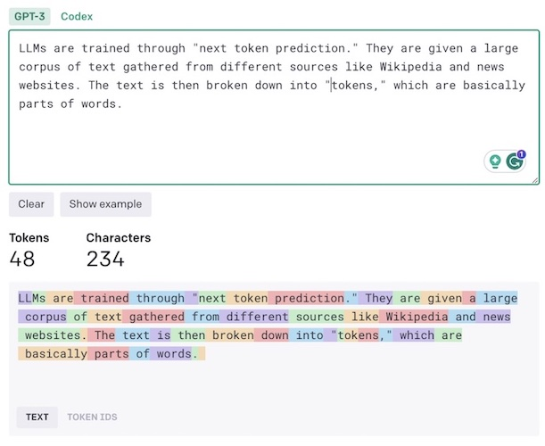

In November 2022, San Francisco-based artificial intelligence lab OpenAI released ChatGPT, an AI chatbot that quickly became a sensation and captured the interest and imagination of people across the world. ChatGPT became the fastest-growing app in history, reaching 100 million users just two months after its launch.
A lot of promise and concern surrounds ChatGPT and similar AI systems, also known as “large language models” (LLMs)—huge AI neural networks that can process and generate human-like text. People have put the chatbot to all kinds of creative uses, including writing articles and emails, designing websites, and writing software code. But concerns have arisen about potentially nefarious uses, such as facilitating the spread of misinformation, phishing emails scams, and allowing students to cheat on tests.
Here's everything you need to know about ChatGPT.
What Is the Technology Behind ChatGPT?
ChatGPT is powered by a deep neural network. DNNs are software architectures that are roughly inspired by the structure of the brain. They learn to perform tasks by processing many examples and tuning their parameters to approximate the common patterns they spot across those examples.
LLMs such as ChatGPT and GPT-4 use a special neural-network architecture called transformer networks, which are especially good at learning from large sequences of data, including text, audio, images, and even protein structures. LLMs are trained through “next token prediction”: They are given a large corpus of text gathered from different sources, such as Wikipedia, news websites, and GitHub. The text is then broken down into “tokens,” which are basically parts of words (“words” is one token, “basically” is two tokens).
The model takes a chunk of text (say, the opening sentence of a Wikipedia article) and tries to predict the next token in the sequence. It then compares its output with the actual text in the training corpus and adjusts its parameters to correct any mistakes. By doing this over and over across a very large body of text, the transformer develops a model of language that can create coherent sequences of text when given a prompt.
All transformer-based LLMs use next-token prediction. What makes ChatGPT special is an additional training step called “reinforcement learning from human feedback” (RLHF). In this stage, human reviewers and annotators craft prompts and rate the LLM’s output. The model then fine-tunes its parameters to generate outputs that receive higher ratings. This helps ChatGPT to align itself with the user’s intent. RLHF is the reason that ChatGPT has been so much more useful than its predecessors.
How Can I Try ChatGPT?
You can sign up for ChatGPT on OpenAI’s website; it's also accessible via an iOS app. The free version of the chatbot has limited server capacity and might be slow to respond, depending on server loads. It doesn’t have customer support and is based on the older GPT-3.5 model.
The paid version, ChatGPT Plus, costs $20 per month. It offers priority responses, has customer support, and is based on the more advanced GPT-4 model, which has a longer memory than its predecessor.
You can also access ChatGPT through OpenAI’s API, where you can pay for it based on the number of tokens you use.
Another way to try ChatGPT is through third-party services. One example is Poe, an app that features several different chatbots, including ChatGPT
What Can I Do With ChatGPT?
With the right instructions and context, ChatGPT can be very useful. Here are a few things you can do with ChatGPT.
- Writing: ChatGPT can be a good tool for writing articles. If you prompt it to write a full article in one pass, it will give mixed results. But if you work with it step by step, ChatGPT can do impressive things. For example, you can start with an outline and flesh out each part with the help of ChatGPT
- Editing: ChatGPT is an excellent editing assistant. You can use it for copy editing, proofreading, rephrasing, style adjustments, and more.
- Translation: ChatGPT can translate very well using dozens of languages. If you’re working on a specialized domain, you can improve its translation by providing it context such as an example of a document in the source and destination languages.
- Summarizing: ChatGPT can summarize articles, speeches, and papers. It becomes more accurate when you provide guidelines, such as which topics to highlight.
- Brainstorming ideas: ChatGPT can provide all kinds of assistance here, from suggesting discussion points for a presentation to planning a trip.
- Writing code: ChatGPT is a very good coding assistant and turns functionality descriptions into working code in dozens of programming and scripting languages.
What Are the Limits of ChatGPT?

To make the best use of ChatGPT, you should be aware of its limits.
- Hallucinations: LLMs such as ChatGPT can put together text that is lexically correct but factually wrong. This also applies to using ChatGPT for coding: It might generate code that is non-functional or insecure. My rule of thumb is to trust the chatbot only in situations where I can verify the output.
- information: ChatGPT’s knowledge is limited to the data it was trained on. At the time of this writing, the model has been trained on a corpus of text that was gathered in mid-2021. Therefore, it can’t answer questions about recent events. One workaround is to provide it with context. For example, you can copy and paste the text of a recent news report before your prompt and instruct ChatGPT to condition its output on the text of the report. ChatGPT Plus members can also tap into more current information with a recent Bing integration.
- Memory limits: Each language model has a limited memory span, which is counted in tokens. This means that once your chat history exceeds the token limit, the model will not remember the exchanges you made at the beginning of the session. The free version of ChatGPT has a 4,000-token memory limit (around 3,000 words). The paid version, powered by GPT-4, extends the limit to 8,000 and 32,000 tokens.
- Privacy concerns: When you’re interacting with ChatGPT, your data is sent to OpenAI’s servers. The company preserves parts of that data to retrain and improve its model. OpenAI tangled with regulators in Italy over privacy concerns recently, while companies like Samsung have banned its use over fears that employees will reveal proprietary information. The bottom line is, don’t share sensitive data with ChatGPT.
What Are Some Alternatives to ChatGPT?
Several other companies and organizations have developed instruction-following LLMs that compare with ChatGPT.
- Google Bard:Google recently released Bard, a chatbot based on the LaMDA language model. Bard can do almost everything you can do with ChatGPT. Bard also fetches data from Google Search, which helps work around the knowledge limitations of LLMs.
- Bing Chat: Microsoft, which has invested billions in OpenAI, integrated ChatGPT into its Bing search engine (while ChatGPT will now use Bing as its built-in search data provider). Bing Chat helps you use a conversational interface to search for knowledge and perform other tasks you would do with ChatGPT. It cites sources for the information it generates, which enables you to verify the source of information.
- Claude: Earlier this year, Anthropic, another San Francisco–based AI lab, launched Claude, a ChatGPT rival. Claude’s capabilities are very similar to ChatGPT, and the company claims that it has put a lot of effort to make sure its AI is aligned with human values.
- Open-source models: The open-source community released LLMs that you can run on your own servers. These LLMs can help you keep control over your data and also avoid vendor lock-in. Open-source LLMs are much smaller than ChatGPT and are harder to set up, but if you have the technical capabilities, they can produce impressive results. Some of these models include Open Assistant, Alpaca, Vicuna, and Dolly 2.